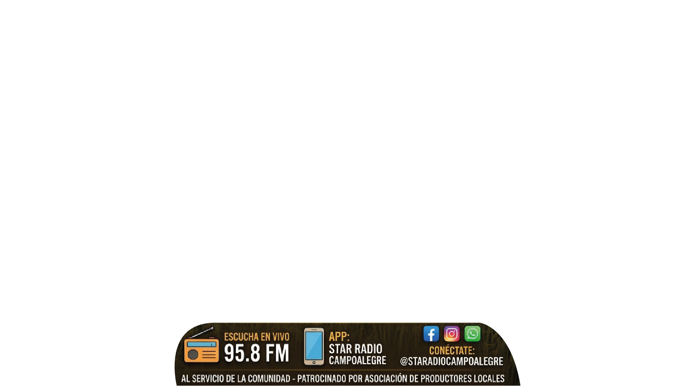
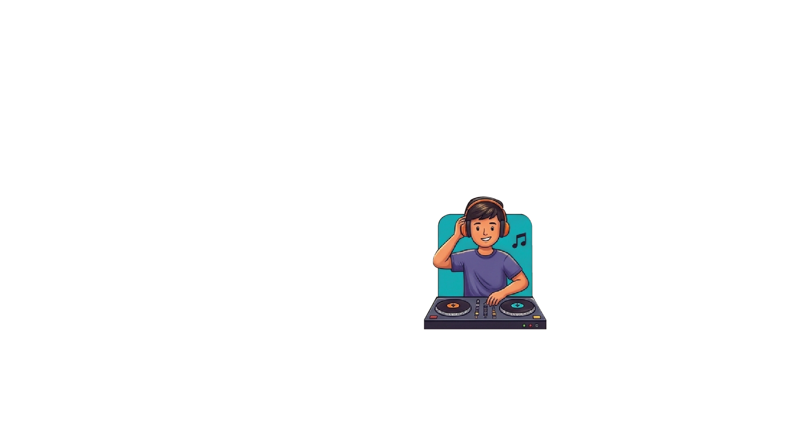
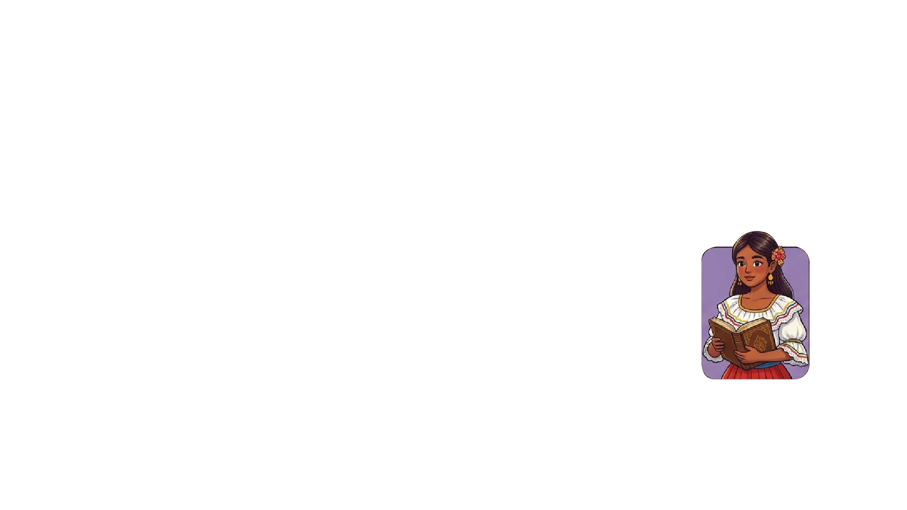

La voz del campo
Información y consejos para quienes trabajan la tierra, con las noticias de los productores locales.
Saber más



Una programación pensada para quienes viven y trabajan en Campoalegre.
Información y consejos para quienes trabajan la tierra, con las noticias de los productores locales.
Saber más
Memorias, saludos y conversaciones con las personas que hacen pueblo.
Saber más
Una selección musical para acompañar la jornada, con los ritmos que más se escuchan en la región.
Saber más
Espacios para los jóvenes, la lectura, las tradiciones y el talento de la región.
Saber más